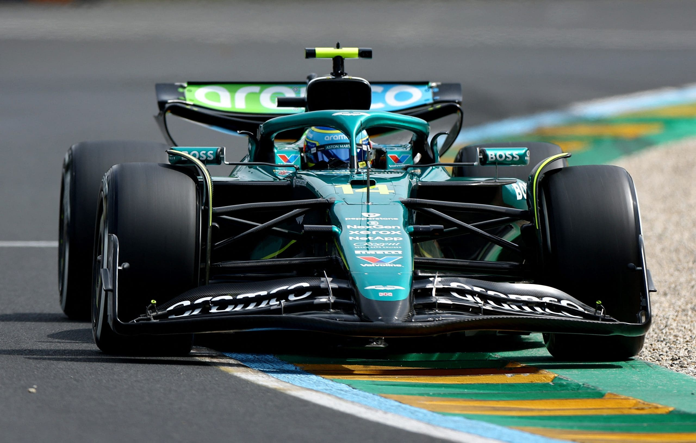

Practice Report
Alonso Stuns with Blistering Practice Pace in Melbourne
March 13, 2025The opening practice session at Albert Park has delivered a genuine shock, with Fernando Alonso dominating the timesheets for Aston Martin. His remarkable lap was untouchable, signaling a potential shake-up of the competitive order this weekend...
Full Practice Results - Melbourne
| Pos | Driver | Time | Gap | Laps |
|---|---|---|---|---|
| 1 |
Fernando Alonso
Aston Martin
|
1:24.700 | - | 18 |
| 2 |
Nico Hulkenberg
Kick Sauber
|
1:25.246 | +0.546s | 22 |
| 3 |
Carlos Sainz
Williams
|
1:25.504 | +0.804s | 24 |
| 4 |
Esteban Ocon
Haas
|
1:25.520 | +0.820s | 21 |
| 5 |
George Russell
Mercedes
|
1:25.554 | +0.854s | 25 |
| 6 |
Oscar Piastri
McLaren
|
1:25.609 | +0.909s | 23 |
| 7 |
Andrea Kimi Antonelli
Mercedes
|
1:25.656 | +0.956s | 26 |
| 8 |
Lando Norris
McLaren
|
1:25.759 | +1.059s | 24 |
| 9 |
Isack Hadjar
Visa RB
|
1:25.833 | +1.133s | 28 |
| 10 |
Charles Leclerc
Ferrari
|
1:25.941 | +1.241s | 23 |
| 11 | Lewis HamiltonFerrari | 1:26.175 | +1.475s | 20 |
| 12 | Gabriel BortoletoKick Sauber | 1:26.194 | +1.494s | 29 |
| 13 | Liam LawsonRed Bull | 1:26.244 | +1.544s | 19 |
| 14 | Yuki TsunodaVisa RB | 1:26.380 | +1.680s | 27 |
| 15 | Pierre GaslyAlpine | 1:26.527 | +1.827s | 25 |
| 16 | Alexander AlbonWilliams | 1:26.854 | +2.154s | 22 |
| 17 | Lance StrollAston Martin | 1:27.333 | +2.633s | 17 |
| 18 | Max VerstappenRed Bull | 1:27.692 | +2.992s | 15 |
| 19 | Oliver BearmanHaas | 1:29.123 | +4.423s | 30 |
| 20 | Jack DoohanAlpine | 1:29.882 | +5.182s | 31 |